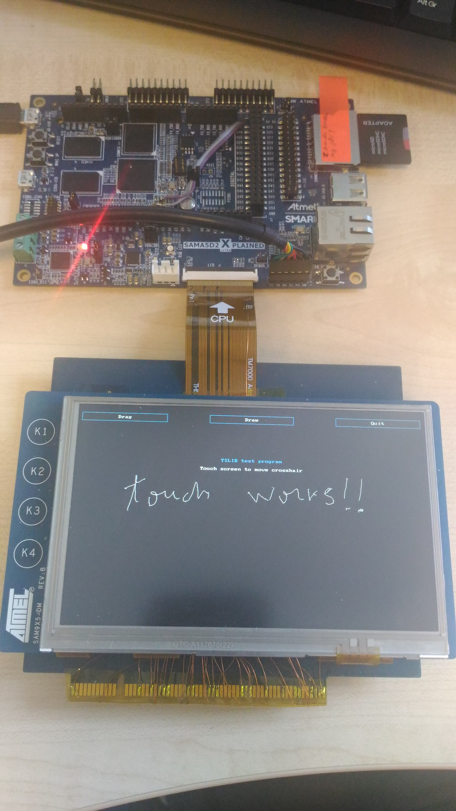

Using the SAMA5D2-compatible Resistive Touchscreen
- Move the PMIC on another i2c bus, because the pins used for the current i2c bus of the PMIC need to be used for the resistive touch connector.
- Populate R36-R39
Software setup
With the modified hardware, resistive touchscreen can be enabled using an overlay provided in the at91 overlay treeOverlay information
The at91 overlay treemake DTC=<path> KERNEL_DIR=<path> KERNEL_BUILD_DIR=<path> sama5d2_xplained_grts.itbUse the sama5d2_xplained_grts.itb to boot the kernel, altering the U-boot bootm command as follows:
bootm 0x24000000#kernel_dtb#grtsFor more information about how to use U-boot to boot a FIT image for the kernel and Device Tree overlays, see the specific page.
Picture of the setup
| WebFaqBaseForm | |
|---|---|
| Boards | Sama5d2Xplained |
| Components | Kernel, linux-4.14-at91, linux-4.19-at91, linux-5.4-at91 |
| Summary | Guide for SAMA5D2 Resistive Touchscreen |


| I |
Attachment | Action | Size | Date | Who | Comment |
|---|---|---|---|---|---|---|
| |
P_20170613_1616521.jpg | manage | 1661.4 K | 2018-10-17 - 07:47 | EugenHristev | resistive touch |
r5 - 02 Jun 2020 - 07:02:42 - EugenHristev

{kind=link}
{kind=link}
Copyright © by the contributing authors. All material on this collaboration platform is the property of the contributing authors.
Linux® is the registered trademark of Linus Torvalds in the U.S. and other countries.
Microchip® and others, are registered trademarks or trademarks of Microchip Technology Inc. and its subsidiaries. 
Arm® and others are registered trademarks or trademarks of Arm Limited (or its affiliates). Other terms and product names may be trademarks of others.
Ideas, requests, contributions ? Connect to LinksToCommunities page.